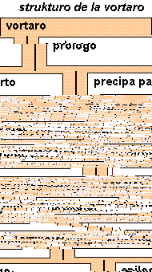

strukturaj pripensoj
Tiu chi unua alproksimigho al la kruda strukturo de DTD por esperanta
elektronika vortaro apogighas sur la strukturo de PIV kaj la rekomendoj de
TEI ch. 12. Tamen ghi provas simpligi, kie tro da fleksebleco shajnas
nenecesa. En la notoj trovighas ankorau pripensindaj punktoj.
Por fajnigi tiujn unuajn pripensojn, ni devos aldoni la strukturon
de kapvortoj, difinoj, ekzemploj, referencoj ktp. Oni devos paroli pri
klarigoj, formuloj, tildoj... Cetere estas necese ekzameni la necesajn
atributojn de la elementoj.
Krome ni devos kontroli, chu ni ne forgesis gravajn bezoneblajn elementojn.
strukturo de vortaro

Vortaro konsistas precipe el tri grandaj partoj:
- La prologo, kiu entenas la titolpaghojn,
antauparolojn, simbolklarigojn, uzoinstrukciojn ktp.
- La meza, precipa parto, kiu entenas la vortstokon
de la vortaro kun la difinoj, ekzemploj ktp.
- La epilogo, kiu povas enteni tabelojn, gramatikajn
klarigojn, indekson au similajn informojn.
La strukturon de la antaua kaj malantaua partoj oni ne facile povas
preskribi, char ghia enhavo povas esti tre
varia. Estus konsilinde utiligi por tiuj partoj iun gheneralan
DTDon, kiu permesas multspecajn strukturerojn.
La vortarospecifa parto fakte estas la meza, ghi povas konsisti el
pluraj partoj. Che dulingva vortaro tio povus esti la du partoj por
la traktitaj lingvoj. Krome oni uzas sekciojn por ordigi
la vortojn lau unuopaj literoj. Chiu sekcio entenas fine
la artikolojn pri la unuopaj vortoj au terminoj.
Ne chiu vortaro devas havi partojn au sekciojn,
tio iom komplikas la aspekton de la dekstra grafiko.
Notoj:
- Por la antaua, meza kaj malantaua partoj oni povus
eble trovi pli taugajn nomojn ol: kapo, korpo, vosto.
- Por krei la antauan kaj malantauan parton oni povus elekti tri
vojojn: 1e Utiligi tre ampleksan DTDon, kiu kovras chiujn
eventualajhojn. 2e Utiligi tre simplan DTDon kaj por komplikaj strukturoj
enmeti ligojn al dokumentoj konstruitaj lau alia DTD. 3e Tute ne zorgi
pri ili, sed simple por prezentado aldoni iujn paghojn (papere au HTMLe).
- Oni devus decidi, chu la titolo de la vortaro estu plej unua
strukturero au parto de la kapo. La dua varianto favoras pli
komplikajn titolojn (kun subtitoloj, eldonejo, autoroj...)
- Che PIV fakte ne ekzistas partoj, sed sekcioj
Oni povas aldoni atributon al chiu parto: <parto lingvo="Esperanto">
- TEI ch. 12 utiligas pli gheneralan koncepton, anstau partoj kaj
sekcioj ghi difinas la stukturelementojn <div0>..<div2> kaj ne preskribas, kiel uzi ilin. Sed vershajne estas egale, char ankau la
strukturelementojn parto kaj sekcio oni povas kompreni tre
ghenerale, kaj vershajne sufichos tiuj du.
strukturo de artikolo
 Artikoloj estas enkondukataj de la kapvorto,
poste sekvas diversaj derivajhoj,
la kapvorto fakte jam anoncas la unuan derivajhon.
Artikoloj estas enkondukataj de la kapvorto,
poste sekvas diversaj derivajhoj,
la kapvorto fakte jam anoncas la unuan derivajhon.
La priskribo de derivajho konsistas el kapvorto kaj
ties diversaj sencoj kaj subsencoj.
La sencoj estas priskribitaj de diversaj elementoj
traktotaj en la sekva alineo.
Ne estas necese distingi derivajhojn kaj sencojn.
Fakte terminaro kutime ne priskribas derivajhojn. Se ekzistas nur unu senco de vorto oni ne bezonas uzi la elementon senco. Tial la priskribaj elementoj en la grafiko trovighas sub diversaj aliaj.
Notoj:
- TEI ch. 12 ne uzas la strukturelementon derivajho. Fakte
en la angla kaj aliaj naciaj lingvoj ofte ne estas multaj derivajhoj kaj
pro malregula derivado estas necesa mencii ilin kiel propraj kapvortoj.
Tamen PIV speciale, kaj Esperanto ghenerale, favoras la kunmeton de chiuj
derivajoj de unu vorto en unu artikolo.
- Ekzistas homonimoj, t.e. vortoj, kiuj aspektas same, sed havas
diversajn signifojn. En PIV vi ekz. trovas du artikolojn kun la radiko
er (1. sufikso, 2. = erao). TEI ch. 12 grupigas tiajn homonimojn
per speciala strukturelemento <superEntry>. Sed mi ne tute komprenas,
kiel tio utilas.
- Alia afero estas la grupigo de sencoj, en PIV ekz. trovighas: -er/. I. sufikso,
II. memstara vortero. Por fari grupojn en TEI ch. 12 estas uzata la strukturelemento <hom>. Alia ebleco eble estus esprimi la apartenecon
al unu grupo per atributo: -er <senco grupo="I" numero="1"> ...
<senco grupo="II" numero="2">.
Tiu varianto shajnas pli simpla rilate al la DTD, alikaze vershajne ghi
malfaciligas la prezentadon, char la sencogrupoj fakte aperu kiel tiuj,
disigitaj per blanka spaco kaj enkondukitaj per romia cifero; oni do
devus unue kolekti chiujn sencojn apartenantaj al unu sencogrupo kaj nur
poste povus doni la ghustan aspekton al la grupo.
Ni do eble ankorau aldonu elementon sencgrupo.
- PIV fakte numerigas la sencojn tra chiuj grupoj, t.e. ne rekomencas en
chiu grupo je 1. Tio ankau plifaciligas la referencadon al certa
senco (-er 2 anstatau -er I 1).
- TEI ch. 12 permesas la nestadon de sencoj, t.e. esprimadon
de sub- kaj subsubsencoj per la sama strukturelemento. Mi ne scias, chu
ni bezonos tion. Supozeble sufichos elementoj senco kaj
subsenco.
- En PIV foje en derivajhoj estas kunmetitaj pluraj kapvortoj apartigite
per komo por difini ilin samtempe. Oni do povus permesi au la plurfojan
okazon de kapvorto au oni konsideras ilin kune kapvorto.
Problemojn tio povus kauzi, se oni volas ekzakte serchi iun kapvorton.
priskribaj elementoj
 Priskribaj elementoj estas:
Priskribaj elementoj estas:
- fontindikoj,
- gramatikaj informoj,
- informoj pri la uzo, ekz. la fakoj,
en kiuj estas uzata la vorto au vortsenco, au ghia
formaleco au malformaleco ktp.
- la difino de la vorto au vortsenco,
- kelkaj ekzemploj pri la vortuzo,
- rimarkoj kaj
- referencoj al komparindaj vortoj,
- tradukaj informoj en plurlingva vortaro,
- kaj bildoj.
Tiuj elementoj povas okazi plurfoje kaj en iu ajn
vicordo (pro tio la rugha arko).
Notoj:
- TEI ch. 12 sugestas diversajn priskribajn informojn, ekz. pri
gramatika klaso, genro, ortografio kaj fonetiko. Por esperantaj
vortaroj tiuj informoj normale ne estas necesaj (krom eble, chu
temas pri transitiva au netransitiva verbo). Tamen, se oni konsideras
ankau la konstruadon de plurlingvaj vortaroj, oni devos aldoni tiajn
elementojn, ili estos partoj de la elementoj kapvorto kaj
gramatiko.
kapvorto
Kapvorto enhavas informojn pri la radiko, la fonto, la prononco. Eble ankau informojn pri silabigo kaj etimologio. La kapvorto por derivajho krome povas enhavi iujn literojn kaj
tildon por referenci al la radiko.
gramatiko
La gramatikaj informoj estas vortspeco k.a.
traduko
Traduko konsista el la tradukita vorto au frazo kaj informoj pri lingvo, difinoj k.a.
ekzemplo
Ekzemplo kosistas el la ekzemplofrazo, evtl. traduko kaj fonto.
fonto
Fontindikoj povas enhavi: la verkon, lokon en la verko, autoron kaj aliajn informojn.
administraj informoj
Ili ampleksas indikojn pri la kreodato, kaj shanghdatoj de la artikolo, pri la autoro k.a.
aliaj elementoj
Aliaj elementoj ekz. estas
- tildo - Ghi povas okazi en kapvorto, difino, ekzemplo, rimarko, traduko. Ghi chiam rilatas
al la radiko donita en la elemento kapvorto.
- klarigo - ghi povas okazi en difino, ekzemplo, rimarko kaj traduko.